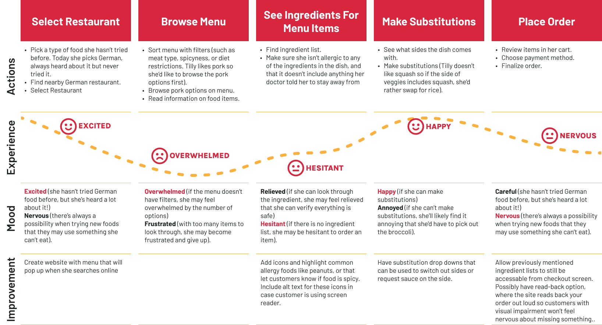
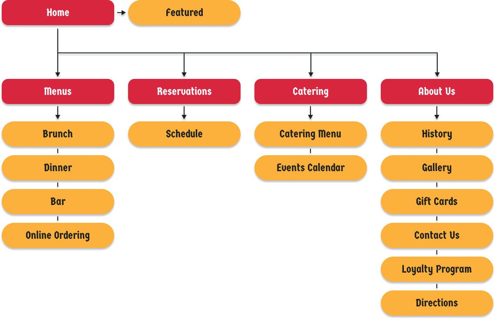
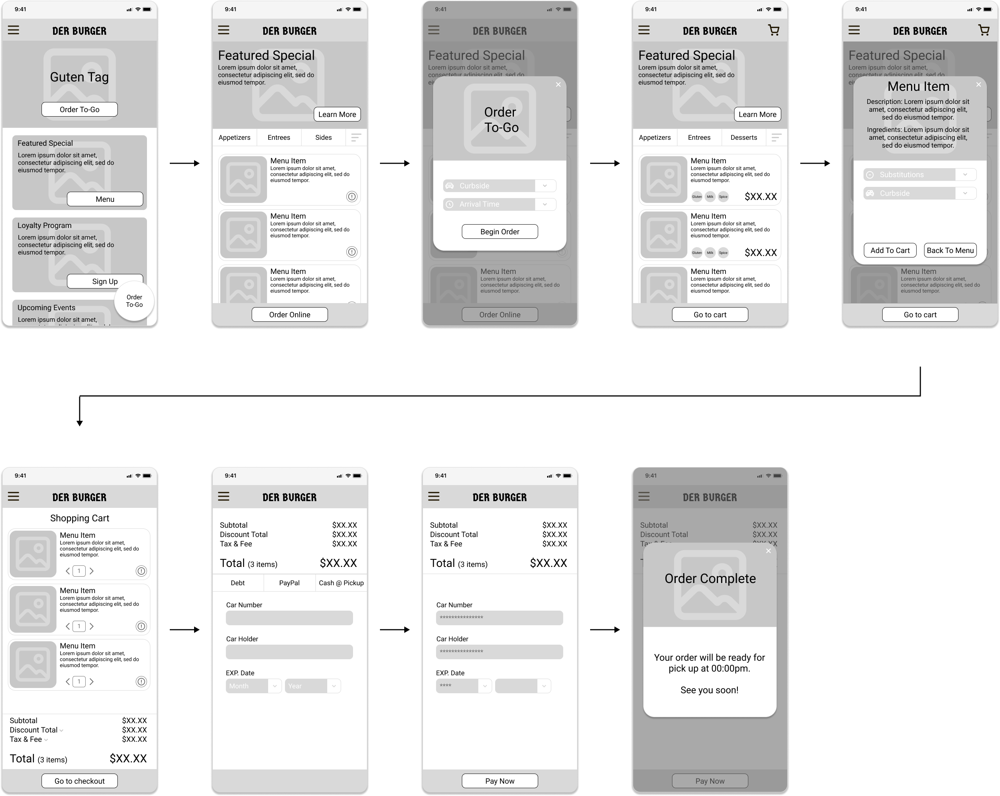
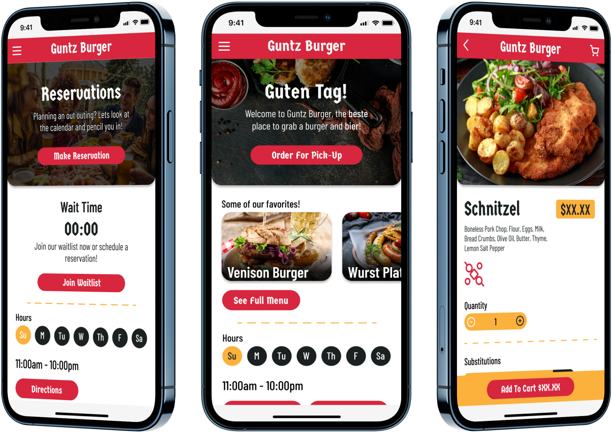
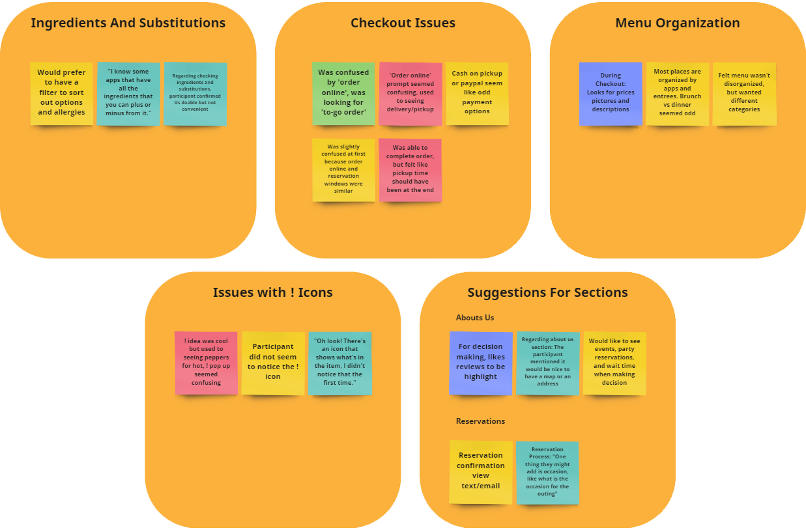
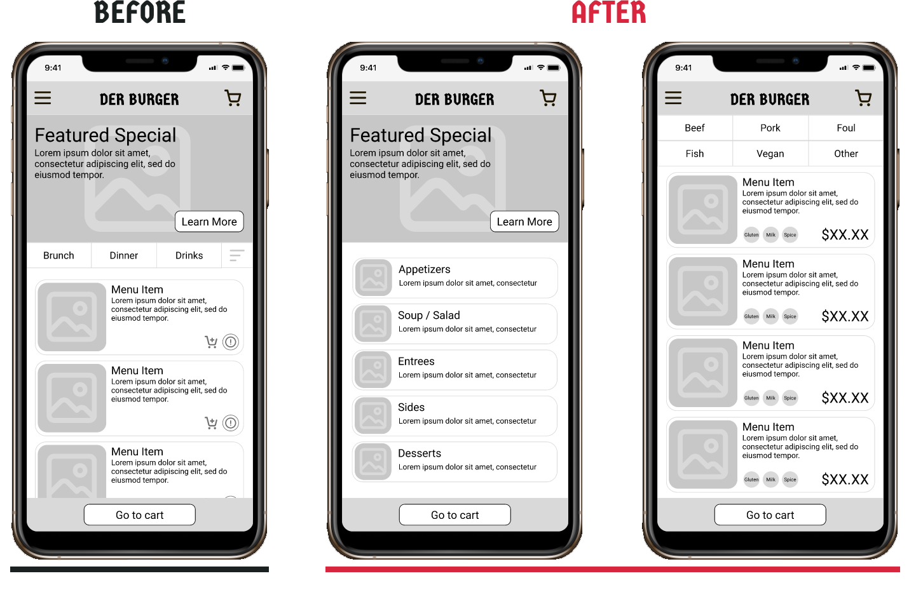

UX Case Study For
Guntz Burger
This case study is for a hypothetical restaurant called Guntz Burger, a German restaurant in need of a mobile app. They are having issues with website activity not translating into conversions, and management is hoping a user friendly app will decrease drop off rates.
ROLE: UX Research, UX Design, and Visual Design
RESPONSIBILITIES: This was a solo project, and as such, I was responsible for all elements of the case study. This included user interviews, conducting a competitive analysis, creating personas and user journeys, prototyping, conducting usability studies, and more.
DURATION: 12 Weeks
TOOLS: Figma, Miro, Adobe Illustrator, Google Sheets, Google Docs
Design Process
To create a user focused application...
The Design Thinking process to empathize with our users and iterate designs until their needs were met.
Empathize
- User Interviews
- Pain Points
- Competitive Analysis
Define
- Problem Statement
- Empathy Maps
- Personas
- User Journey
Ideate
- Brainstorming
- Userflows
- Information Architecture
Prototype
- Lo-Fi Mockups
- Lo-Fi Wireframes
- Hi-Fi Wireframes
- Prototyping
Test
- Usability Studies
Empathize Phase
Research & Interview Insights
User Research
Interiews were conducted with users who use restaurant apps at least once a month, whether it's to order online, make a reservation, or plan an outing. Research participants ranged from ages 27 to 62, and came from various economic backgrounds. All participants were from the greater Houston area, since Guntz Burger only has one location, and its target audience includes potential customers within 30 minutes driving distance.
After interviewing several restaurant app users, the most common pain points fell into two categories, process and support. These pain points helped out greatly during the definiation phase when it came to creating personas and brainstorming features.
Pain Points
Process
- Lack of menu item customization features
- Difficulty browsing menus
- Inaccurate menu item images
Support
- Lack of information regarding parking and the surrounding area
- Not enough details regarding menu items
- No way to filter by dietary restriction
Competitive Analysis
An analysis of several local competitors comparing details and features.
To create a Competitive Analysis, I research 2 direct competitors (German restaurants in the Houston area), and 2 indirect competitors (an Austin German restaurant, and a Houston based Polish restaurant).

Define Phase
Situation & Goals
Problem Statement
The overwhelming consensus amongst our site's users is that they often hesistant to choose our establishment due to a lack of transparency. This is not a trust issue, but more that they find it difficult to have their questions answered when they are choosing a restaurant.
Tilly is an older college professor who needs to be able to see the nutritional facts and ingredients for different menu items because he has dietary restrictions and also has certain items she like would like to avoid.
Gerald is a recent Houstonian transplant who nees to see what a restaurants parking situation and atmosphere are like ahead of time because he is new to the area is does not know what the different parts of town are like, and therefore doesn’t know how the vibe of the different restaurants there will be like.
Proposed Solution
Since the biggest problem our customers face is finding answers to their questions, the solution seems obvious. Give them the answers! More specifically, the proposed solution is to present answers at points of the user journey when the questions would initially arise.
This can be done by adding various pages and pop ups to our site. Expaning our 'About Us' section to include images and layouts of the restaurant would go a long way in helping Gerald, and pop ups in our menus would help put Tilly at ease.
Personas
Let's Meet Our Users!
User Journey
The Emotional Roller Coaster!
Ideate Phase
Information Architecture
What do we need?
User Flow
How are we getting there?

Prototype Phase
Pen & Paper
Iterating Paper Wireframes
Assembling Elements
Once the Information Architecture has been drawn up, necessary elements can be defined and rough sketches can be made of the different screens the app needs. Here we have 5 iteractions of the apps homepage. Several versions we're drawn out under a time constraint. The time constraint forces us to put down whatever comes to mind, without stopping to overthink. Once 5 iterations have been drawn out, we can take the strongest elements from each and piece them together.
Digital Conversion
Once a final paper wireframe has been drafted, it can be converted
into a low-fidelity digital wireframe. This enables the use of
tools such as Figma or Adobe XD for protoyping. Figma was used in
this case study.
This example of the converted homepage highlights the key features
of the screen that were crucial for the page's functionality.
- Navigation Menu - A streamlined method to navigate to different parts of the app. User Research showed that users wanted more than just menu information to make their decision, so additional information needs to be easily accessible.
- The homescreen for a restaurant app can be very cluttered, but the online ordering function still remains high priotity. Here it is predominately displayed to catch the user's attention and lead them to a menu focused page.
- For user's who don't notice A, a secondary scrolling area highlighting other parts of the app is provided.
Lo-Fi Prototype
Rough Outlines Of Screen Layouts
The image below shows the screens of the online ordering user flow in the Lo-Fi Prototype created for this case study. To demo the full protoype, click the link below.
Before moving onto the High Fidelity protype, a usability study was conducted to see what improvements or changes needed to be made. To skip to the usability study, please click the button below.
Hi-Fi Prototype
A polished preview
Below you can see a couple examples of the High-Fidelity Prototype that was created after insights from the first usability were synthethized.
Test Phase
Usability Study
Results From Lo-Fi Usability Study
Research Questions
Do the changes made to the website improve or hinder its usability?
What parts of the user-journey, if any, are leading to the drop off rates?
Is the user satisfied at the end of their user journey?
Are the users left with any questions they initially thought would be answered by the website?
What are further improvements that could be made to the website?
Is the user likely to use the site again?
Participants
5 residents of the Greater Houston Area who eat out 1-4 times a month.
Customers who order to-go food 2 -10 times a month.
At least 2 customers with dietary restrictions.
Methodology
Users were asked to perform tasks in a low-fidelity prototype
15 Minutes
United Sates, Remote
3 Unmoderated Usability Studies
2 Moderated Usability Studies
Identifying Themes
Critiques for your consideration
Once the usability studies had been conducted, the notes from each study were transferred to digital post it notes on Miro and organized into categories. Though these categories themselves do not constitute themes, themes can be gleamed from them. For instance, the categories of menu organization, the allergy icon, and the ingredients and substitutions categories together indicate a theme. That theme could be called, 'issues with menus and menu items'
Insights
But what does it mean?!
Once themes have been identified, they need to be turned into insights. In the previous example, we found the theme 'issues with menus and menu items'. What does that mean? It can be infered that since users had issues with the menus or menu items, these are areas where pain points are leading to drop offs. Working off of this insight, many of the menu options, filters, and icons that felt confusing have been reworked to be more intuitive.
Takeaways
While some of the terminology and submenus have changed, we need to figure out if the new options are an improvement.
Some users would like additional features to make the reservation process more convenient.
Next Steps
Another round of usability studies focused on the new submenus and terminology.
Adding ‘Occasions’ to Reservations and add another instance of ‘Directions’ to About Us
Some additional content may need to be added to the site in order for most users to have enough data to make a decision on whether or not they’d eat at this restaurant.
Misc.
Additional Considerations
Considering All Possibilities
Accessibility Considerations
WCAG 2.1 Color Contrast: The company wanted establish a color palette for the restaurant that mimicked the German flag. This produced a few challenges in accessability in terms of making sure all text was visible to as many users as possible. Per WCAG guidelins, the minimum minimum contrast ratio for large-scale text is 3:1 and 4.5:1 for body text. The colors chosen (red #d7263d, yellow #fbb13c, and black #1b2021) were able to meet these guidelines, as long as red background wasused with white text (ratio 4.96:1) and yellow background was used with black (ratio 8.98:1) was used for body text.
Iconography and images were used as often as possible for individuals with difficulty reading english. Variable language versions for the app are being tested with emphasis on the languages popular in the immediate area of the restaurant (Spanish and Vietnamese).
All imagery and iconography is to include alt text to ensure accessability for users using screen readers.